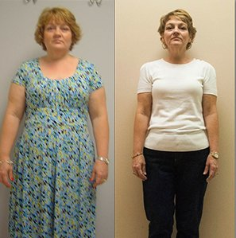
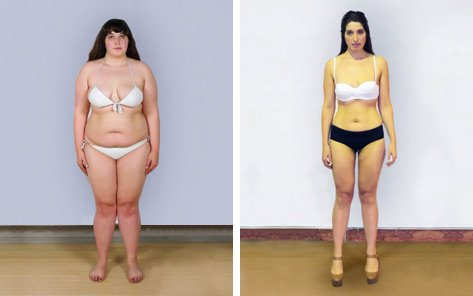
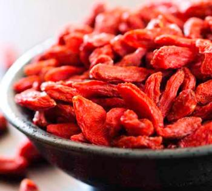

Prestiżowa nagroda dla naukowców za najlepszy produkt 2014
Amerykańscy naukowcy dowiedli, że dojrzałe jagody goji zbierane w okresie od września do grudnia, mają niezwykłą zdolność do spalania tkanki tłuszczowej. Dotychczas żaden z badanych produktów nie wykazał tak silnych właściwości odchudzających. Za to odkrycie Steven Robsons i Anthony McDorcey zostali nagrodzeni w dziedzinie genetyki.
Naturalny spalacz tkanki tłuszczowej
Niewielkie ciemnofioletowe jagody goji to owoce drzew palmowych rosnących w tropikach Brazylii. Z wyglądu jagody goji przypominają borówki amerykańskie i mają lekko słodki smak. Wyróżniają się charakterystycznym aromatem, a są przy tym niezwykle pożywne.
Zdrowe i odchudzające
Miąższ jagód goji zawiera pełną gamę składników odżywczych niezbędnych do zachowania zdrowia i urody. Nie bez powodu jagody goji stanowią ponad 50% pożywienia w Amazonii. Te niepozorne owoce są prawdziwą bombą witaminową, zawierają też cenne minerały. goji stanowią bogate źródło protein, nienasyconych kwasów tłuszczowych omega-3 i omega-6, a także błonnika, aminokwasów, polifenoli oraz antyoksydantów. Zawierają przy tym bardzo małe ilości cukru.
Jednym z niewielu certyfikowanych suplementów diety z jagodą goji jest .
Sekret skuteczności tkwi w dojrzałości owoców, z których jest stworzony. to starannie wyselekcjonowane owoce zebrane w okresie od września do grudnia , czyli w okresie, w którym uzyskują pełną dojrzałośćto gwarancja właściwości odchudzających. Przy zbiorach owoców producent korzysta z wieloletniego doświadczenia i wiedzy tubylców, aby do laboratoriów docierały jedynie zdrowe jagody nadające się do dalszych procesów przetwórczych.
Z goji schudła 27kg - zobacz wywiad!
– jedyny zaufany produkt
Owoce goji mogą być hodowane jedynie w warunkach jakie panują w deszczowych lasach Amazonii, dlatego nie są dostępne w Polsce. Świeżo zerwane jagody goji bardzo szybko tracą swoje dobroczynne właściwości. Aby je zachować na dłużej, jagody goji poddaje się specjalnym procesom suszenia. Na polskim rynku dostępnych jest wiele suplementów z jagodą goji, jednak niewiele z nich zostało przebadanych w europejskich laboratoriach.
Bożena z schudła 18 kg
Joanna z schudła aż 31 kg !
Ola z schudła 22 kg

Sophia z schudła 21,5 kg

Antyoksydanty dla szczupłej sylwetki i urody
Jagody goji są cenione przez kobiety na całym świecie ze względu na ich wspaniały wpływ na urodę. Zawdzięczają to wysokiej dawce silnych antyoksydantów, czyli związków, które zwalczają wolne rodniki. Tak silny przeciwutleniacz jakim jest jagoda goji skutecznie broni organizm przed destrukcyjnym wpływem wolnych rodników i znacznie opóźnia proces starzenia się skóry. Oczyszcza organizm z toksyn i substancji szkodliwych, figura jest szczuplejsza, a cera staje się piękna i jędrna.
Twój sojusznik w odchudzaniu
„Jesz i chudniesz” - Anthony McDorcey, jeden z nagrodzonych naukowców.
Pierwsze badania nad jagodami goji zostały przeprowadzone kilka lat temu. Wykazano wtedy, że owoce mają zbawienny wpływ na układ trawienny człowieka, a to dało podstawę do dalszych badań. Najnowsze wyniki były dla nas niejako zaskoczeniem, okazało się bowiem, że aby uchwycić odchudzające właściwości owoców, należy je zerwać na konkretnym etapie dojrzałości. To tłumaczy, dlaczego tak mało suplementów zawierających jagody goji daje realne efekty.
Jagody goji stały się popularne dzięki swoim fenomenalnym właściwościom odchudzającym. Największą sławą cieszą się w Stanach, gdzie dwie trzecie Amerykanów walczy z nadwagą. Co sprawia, że jagody odchudzają? Duże ilości błonnika usprawniającego pracę układu trawiennego, przyspieszają przemianę materii, a dzięki niskiej zawartości cukru jagody można spożywać bez ograniczeń. Ich aromat zmniejsza apetyt na słodycze. Oczyszczają organizm z substancji trujących oraz złogów tłuszczu, a Ty czujesz się lekko i zdrowo.
"Vademecum odchudzania"
Jonathan ClarkleyTo pierwsze tak spektakularne odkrycie w historii dietetyki: tabletki, których składniki aktywne samoistnie spalają tkankę tłuszczową, a do tego są całkowicie naturalne i bezpieczne. Uczestniczyłem w leczeniu otyłości z zastosowaniem , brałem też udział w badaniach nad wpływem jagody goji na organizm ludzki, i to zaskakujące, że tak długo pozostawała zagadką. Medycyna nareszcie poznała bezinwazyjny sposób na to jak pomóc osobom, które chcą schudnąć.
Institute of Nutrition in Cabrige

Czas porzucić nieskuteczne diety i podrobione specyfiki ale postawić na bezpieczny, naturalny i ORYGINALNY produkt. Dzięki niemu zyskasz nie tylko smukłą figurę, ale również promienną cerę i energię życiową.
Ala Kubik
Nareszcie pojawił się naprawdę skuteczny produkt na rynku! Jestem zachwycona pierwszymi efektami. Minął miesiąc i wbijam się w stare ciuchy z liceum. Zdecydowanie warte każdych pieniędzy!
Komentarz został zapisany.
Zostanie niezwłocznie dodany po weryfikacji przez administratora serwisu
Paulina Baranowska
ja też dzięki nim czuję się doskonale i polecam je komu się da
Komentarz został zapisany.
Zostanie niezwłocznie dodany po weryfikacji przez administratora serwisu
Daniel Pazdzik
Jestem po miesiącu kuracji i zamawiam następne opakowanie. Nikt nie może mi uwierzyć, że tak schudłem tylko dzięki tabletkom.
Komentarz został zapisany.
Zostanie niezwłocznie dodany po weryfikacji przez administratora serwisu
Andrzej Dziedzic
Te pastylki goji są niesamowite! Waga spada w ekspresowym tempie :D życzę innym również sukcesów :P
Komentarz został zapisany.
Zostanie niezwłocznie dodany po weryfikacji przez administratora serwisu
Katarzyna Szymczak
Podzielcie sie wrażeniami
Komentarz został zapisany.
Zostanie niezwłocznie dodany po weryfikacji przez administratora serwisu
Ula Dzik
To nie żarty – goji są słynne na całym świecie. Poczytaj trochę, to zobaczysz
Komentarz został zapisany.
Zostanie niezwłocznie dodany po weryfikacji przez administratora serwisu
Filip Banach
Od miesiąca biorę kapsułki z goji, piję dużo wody i lepiej się odżywiam, bo niestety przez problemy z wagą zacząłem mieć problemy z sercem, mam nadzieję, że wszystko w niedługim czasie wróci do normy
Komentarz został zapisany.
Zostanie niezwłocznie dodany po weryfikacji przez administratora serwisu
Bartosz Gądek
Właśnie dostałem przesyłkę i zaczynam kurację
Komentarz został zapisany.
Zostanie niezwłocznie dodany po weryfikacji przez administratora serwisu
Aleksandra Jankowska
Biorę tabletki z jagód goji od paru miesięcy, na odchudzanie, no i dodatkowo chronią serce i organizm
Komentarz został zapisany.
Zostanie niezwłocznie dodany po weryfikacji przez administratora serwisu
Adam Jaksin
Osobiście pierwszy raz jestem zadowolony z działania tego rodzaju pastylek. Wydałem wcześniej mnóstwo kasy na jakieś podróbki, które nic nie dawały, ale ten produkt okazał sie strzałem w dziesiątkę
Komentarz został zapisany.
Zostanie niezwłocznie dodany po weryfikacji przez administratora serwisu
Sylwia Marek
Osobiście jestem zadowolna z efektu odchudzajacego jaki daje goji, jakimś cudem przy okazji też przestały mnie męczyć migreny
Komentarz został zapisany.
Zostanie niezwłocznie dodany po weryfikacji przez administratora serwisu
Eliza Tomik
Stosowałam na odchudzanie i bardzo mi pomogły, tabletki zawierają dodatkowe składniki, które oczyszczają organizm i poprawiają trawienie, czego doświadczyłam na własnej skórze.
Komentarz został zapisany.
Zostanie niezwłocznie dodany po weryfikacji przez administratora serwisu
Igor Kołata
Zazdroszczę wam tych wyników w odchudzaniu i chyba zdecyduje się na zakup...
Komentarz został zapisany.
Zostanie niezwłocznie dodany po weryfikacji przez administratora serwisu